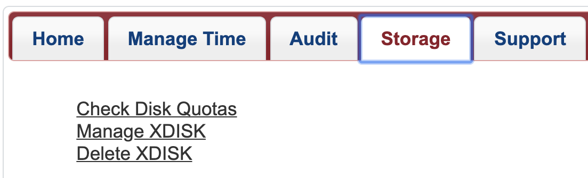

HPC High Performance Storage
Overview
The Universitys Research Data Center provides data storage for active analysis on the high-performance computers (HPCs). Using central computing storage services and resources, University researchers, faculty researchers, and post-doctoral researchers are able to:
- Share research data in a collaborative environment with other UArizona affiliates on the HPC system
- Store large-scale computational research data
- Request additional storage for further data analysis
The storage is mounted as a filesystem and all the clusters have access to the same filesystems.
Storage Summary
Every user has access to individual and shared storage on the system where they can host data for active analyses. A summary of these locations is shown below:
Path |
Description | Quota |
Duration |
|---|---|---|---|
/home/uxx/netid |
An individual storage allocation provided for every HPC user | 50gb | Accessible for the duration of user's account |
/groups/pi_netid |
A communal storage allocation provided for every research group | 500gb | Accessible for the duration of a PI's account |
/xdisk/pi_netid |
Temporary communal storage available for every group on request. See xdisk section below for details. | 200gb-20tb | Up to 300 days |
/tmp |
Local storage available on individual compute nodes. | \(<\) 800GB to 1.4TB | Only accessible for the duration of a job's run. |
Checking Your Storage Usage
To check your storage usage, on a compute node, file transfer node, or login node, use the command uquota. This will show you all the spaces you have access to, their quotas, and current usage.
(puma) [netid@junonia ~]$ uquota
used soft limit hard limit
/groups/pi_netid 6.6G 500.0G 500.0G
/home 37.1G 50.0G 50.0G
/xdisk/pi_netid 12.9G 9.8T 9.8T
You can check your storage allocation through our online user portal by navigating to the Storage tab and clicking Check Disk Quotas:

xdisk
What is xdisk?
xdisk is a temporary storage allocation available to all PIs and offers up to 20 TB of usable space for their group for up to 300 days. PIs may only have one active xdisk at a time.
A PI can request an allocation either via the command line or through our web portal (no paperwork necessary!). Only faculty members (PIs) may request, alter, or delete an allocation from the command line. Members of their research group may be delegated management rights allowing them to manage a group's xdisk on their PI's behalf through our web portal.
Once an xdisk allocation is created, it is immediately available for use. Groups can find their allocations under /xdisk/pi_netid. By default, a subdirectory is created for each group member under /xdisk/pi_netid/netid. If a group member is added after the allocation is created, a directory is not automatically created for them. To add one, reach out to our consultants.
Because xdisk allocations are temporary, they will expire as soon as their time limit is reached. Warnings will be sent to every group member at their netid@arizona.edu addresses beginning one week before the expiration. It is the group's responsibility to renew xdisk allocations or copy files to an alternate storage location prior to the expiration date. Once an xdisk allocation expires, everything in it is permanently deleted.
PIs may request a new xdisk allocation immediately after their previous one has expired. This ensures groups will always have access to increased storage on HPC on a rolling basis with the requirement that housekeeping be done once per academic year.
Requesting, Modifying, and Deleting an Allocation
Warning
If a group has an active xdisk allocation, a new one cannot be created until the active allocation expires or is deleted.
PIs or delegates can request an xdisk allocation at any time through the user portal. Under the Storage tab, select Manage XDISK
This will open a web form where you can enter your size and duration requirements. The maximum size that can be requested is 20000GB and the maximum duration is 300 days. If a PI has created multiple research groups, you can specify the desired group ownership for the allocation from the Group dropdown menu. Once you click Ok, your allocation should immediately be available.
PIs or delegates may manage their xdisk allocation at any time through the user portal. Under the Storage tab, select Manage XDISK
This will open a form which will allow you to modify the size and duration of your xdisk. Xdisk allocations cannot be increased beyond 20000GB and the maximum duration of 300 days. Note: the Group field may only be modified at the time of the allocation's creation.
PIs or delegates may delete their xdisk allocation at any time through the user portal. Under the Storage tab, select Delete XDISK
Clicking this link will open a window with a prompt. Type confirm and then select Delete XDISK to complete the process.
If you would like to request a new xdisk, you may do so as soon as the request is processed. Note: sometimes processing the request can take a few minutes, depending on the number of files and the size of the allocation.
CLI Commands
Warning
The xdisk CLI commands are usable by PIs only. Group delegates can manage allocations via the user portal.
xdisk is a locally written utility for PI's to create, delete, resize, and expire (renew) xdisk allocations. Any PIs who wish to utilize the CLI to manage their allocations can do so using the syntax shown below:
| xdisk Function | Command | Examples |
|---|---|---|
| Display xdisk help | xdisk -c help |
$ xdisk -c help |
| View Current Information | xdisk -c query |
$ xdisk -c queryXDISK on host: ericidle.hpc.arizona.eduCurrent xdisk allocation for <netid>:Disk location: /xdisk/<netid>Allocated size: 200GBCreation date: 3/10/2020 Expiration date: 6/8/2020Max days: 45 Max size: 1000GB |
| Create an xdisk | xdisk -c create -m [size in gb] -d [days] |
$ xdisk -c create -m 300 -d 30Your create request of 300 GB for 30 days was successful.Your space is in /xdisk/<netid> |
| Extend xdisk Expiration Date | xdisk -c expire -d [days] |
$ xdisk -c expire -d 15Your extension of 15 days was successfully processed |
| Resize an xdisk Allocation | xdisk -c size -m [size in gb] |
$ # Assuming an initial xdisk allocation size of 200 gb$ xdisk -c size -m 200XDISK on host: ericidle.hpc.arizona.eduYour resize to 400GB was successful$ xdisk -c size -m -100XDISK on host: ericidle.hpc.arizona.eduYour resize to 300GB was successful |
| Delete an xdisk Allocation | xdisk -c delete |
$ xdisk -c deleteYour delete request has been processed |